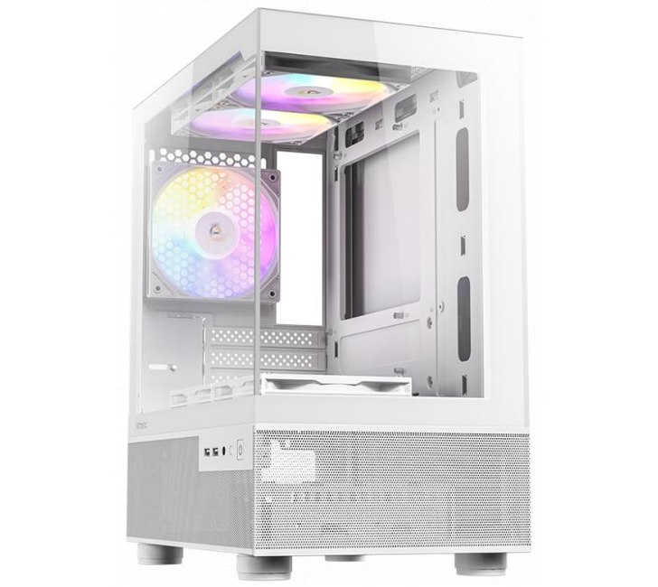
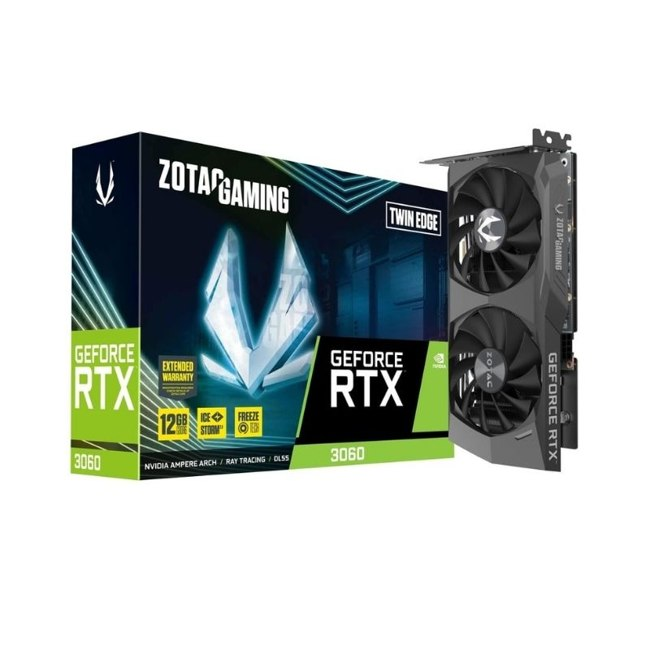
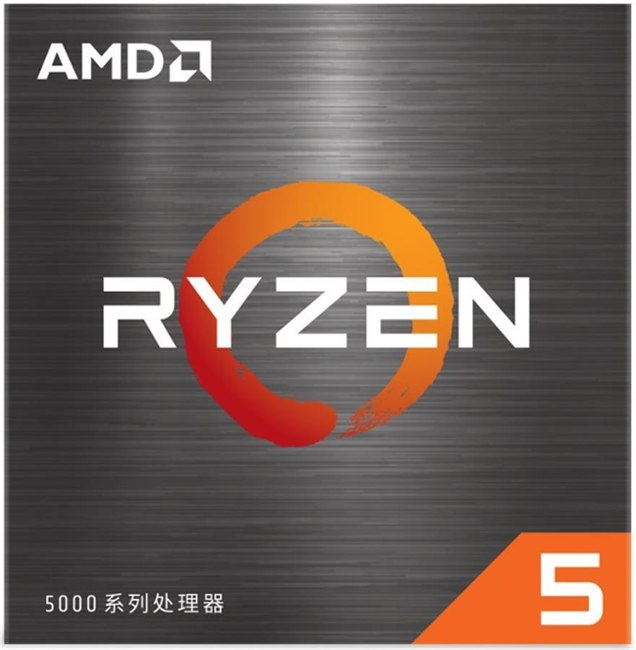
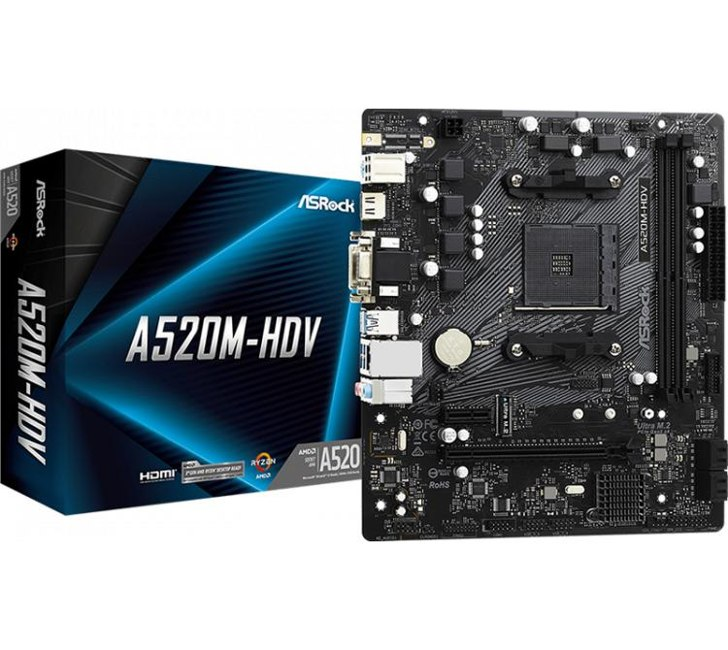
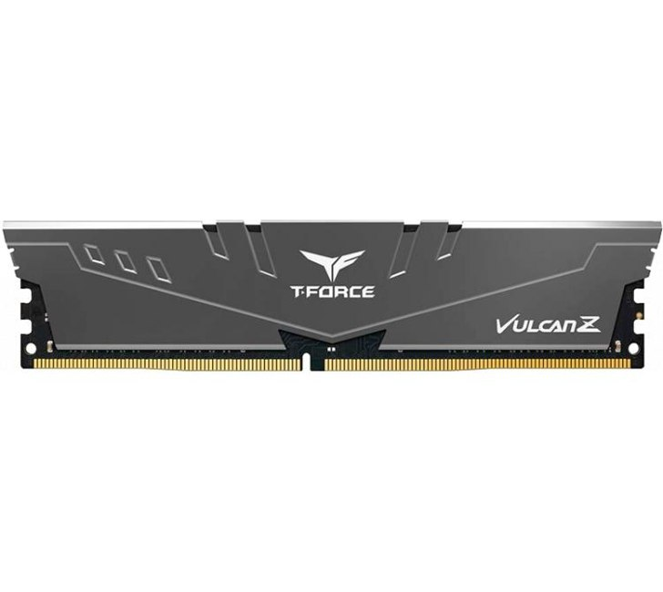
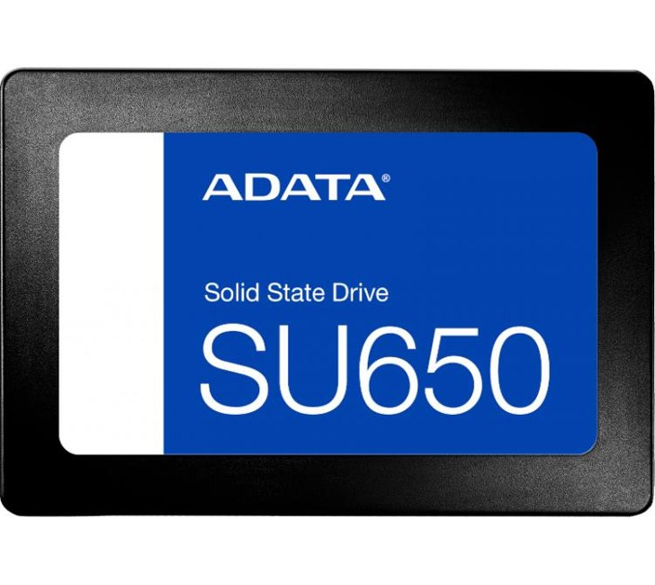
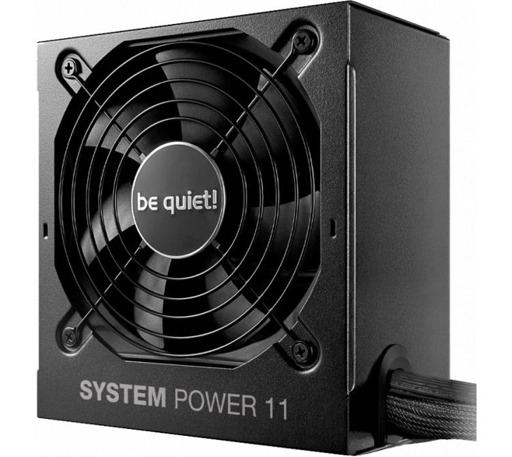

Conversar con un modelo local
Probar un modelo pequeño, cambiar las instrucciones y observar cómo varían sus respuestas. Los modelos y las herramientas se descargan antes de trabajar sin conexión.
Una estación doméstica · Una idea propia
Las buenas preguntas necesitan un lugar para empezar. Una estación para aprender, ejecutar modelos locales y explorar sus respuestas desde casa.
Proyecto académico · ISSD · 2026
Presupuesto de referencia de la torre. Sin envío ni periféricos.

Fotografía comercial del gabinete, no de esta configuración ensamblada. Fuente de la fotografía ↗
El objetivo es comenzar con experimentos pequeños y comprender lo que ocurre. Cada respuesta puede convertirse en una nueva pregunta de investigación.
Probar un modelo pequeño, cambiar las instrucciones y observar cómo varían sus respuestas. Los modelos y las herramientas se descargan antes de trabajar sin conexión.
Preparar preguntas verificables, comparar resultados y registrar respuestas incorrectas. Un primer acercamiento a la evaluación y la seguridad de IA.
Aprender Python, organizar textos y guardar los resultados de las pruebas. Una base para convertir la curiosidad en un proceso de trabajo.

La decisión que define la propuesta
En un presupuesto limitado, prioricé la memoria de la GPU. La RTX 3060 de 12 GB permite plantear pruebas con modelos pequeños y herramientas compatibles con CUDA.
La capacidad necesaria depende del modelo y sus ajustes. El estado y la garantía de la unidad usada se verifican antes de comprar.
Leer el criterio técnico →Una plataforma sencilla para conservar lo que más importa en esta propuesta: una GPU con 12 GB y una torre completa dentro del presupuesto.

6 núcleos y 12 hilos para programar y preparar datos. El Wraith Stealth viene incluido.

La base AM4 del equipo. Dos ranuras DDR4 y conexión PCIe para la GPU.

Dos módulos de 8 GB. Una base para empezar con pocas aplicaciones y una prueba a la vez.

Sistema, herramientas y una selección pequeña de modelos. La primera ampliación que consideraría.

Alimentación adecuada y conector PCIe de 8 pines para la tarjeta elegida.
Formato compacto micro-ATX y cinco ventiladores incluidos. Foto comercial del gabinete.
Propuesta de aprendizaje: Qwen2.5-7B-Instruct, versión GGUF Q4_K_M, con llama.cpp y aceleración CUDA. Empezar con contexto corto y una consulta a la vez.
Diez preguntas cuyas respuestas puedas comprobar en fuentes fiables.
Guardá las respuestas. Anotá errores, dudas y contradicciones.
Cambiá una instrucción por vez y observá qué cambia en el resultado.
Escribí qué encontraste, qué pudiste verificar y qué queda por estudiar.
Es una propuesta de experimento, no una prueba realizada ni una promesa de velocidad. Ficha del modelo · llama.cpp
La placa madre reúne los componentes. El SSD necesita datos y alimentación; el monitor se conecta a la GPU. Las líneas distinguen las conexiones principales.
Esquema propio basado en la documentación citada en la verificación de compatibilidad. El cooler se fija a la CPU y se conecta a CPU_FAN. En el teléfono, deslizá el esquema para verlo completo.
1.241.019 ARS · Precios de referencia del 28/10/2026.
Conversión: 1.560 ARS/USD, cotización utilizada del 27/10/2026.
Incluye torre, fuente, refrigeración y ventiladores. Se reutilizan monitor, teclado, ratón y conexión Ethernet. Se propone Linux y montaje propio.
Sin envío ni logística. CPU y GPU figuraban agotadas en la consulta original; sus precios se conservan como referencias fechadas. El stock y el importe final pueden cambiar.
Ver precios y fuentes ↗| Componente | USD |
|---|---|
| Ryzen 5 5600 BOX + Wraith Stealth | 149,62 |
| ZOTAC RTX 3060 Twin Edge · 12 GB · outlet | 286,54 |
| ASRock A520M-HDV | 52,52 |
| TEAM VULCAN Z · 2 × 8 GB DDR4 | 152,78 |
| ADATA SU650 · 256 GB SATA | 42,04 |
| be quiet! System Power 11 U · 650 W | 62,18 |
| Antec CX200M RGB ELITE White | 49,84 |
| Total de referencia | 795,53 |
Subtotales redondeados. El total se obtiene del importe completo en ARS, por lo que la suma de los valores mostrados puede diferir en un centavo.
Presupuesto académico, no oferta comercial ni garantía de disponibilidad. Modelos, precios y fuentes: documentación del proyecto.
Un SSD de mayor capacidad permitiría conservar más modelos y resultados. Los 256 GB iniciales obligan a seleccionar qué guardar.
Para pasar a 32 GB de RAM, sustituiría los dos módulos por un kit de 2 × 16 GB compatible: ambas ranuras están ocupadas.
Sí, con herramientas que admitan ejecución local y después de descargar el modelo y sus dependencias. La configuración concreta determina qué funciones necesitan conexión. Documentación de LM Studio.
Ese no es el objetivo de esta propuesta. Está orientada a aprender, programar y evaluar modelos pequeños ya entrenados. Los experimentos de entrenamiento requieren evaluar por separado datos, memoria y tiempo de cálculo.
Permite dedicar menos presupuesto a la GPU conservando 12 GB de VRAM. La contrapartida es revisar el estado de la unidad, sus temperaturas y las condiciones de garantía del vendedor.
No. Influyen el tamaño del modelo, la cuantización, el contexto y el programa. Por eso se propone comenzar con una versión pequeña, contexto corto y comprobación del uso de memoria.
No. Es un diseño académico fundamentado en documentación, precios y compatibilidad. Las fotografías identifican componentes comerciales. No se presentan benchmarks propios de esta estación.
En Parte 3 están las dos configuraciones, el presupuesto detallado y la compatibilidad. Las partes 1 y 2 explican el cómputo y el almacenamiento; la bibliografía reúne las fuentes.
El Punto Dulce
La estación es el lugar donde podés empezar a ponerla a prueba.